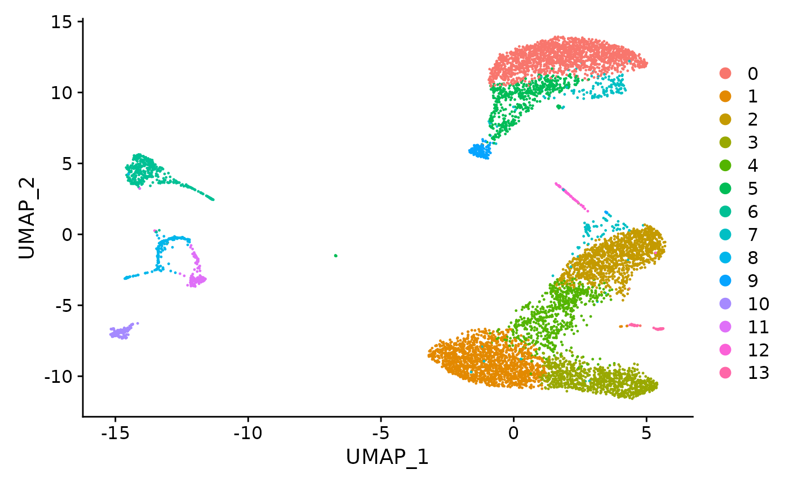
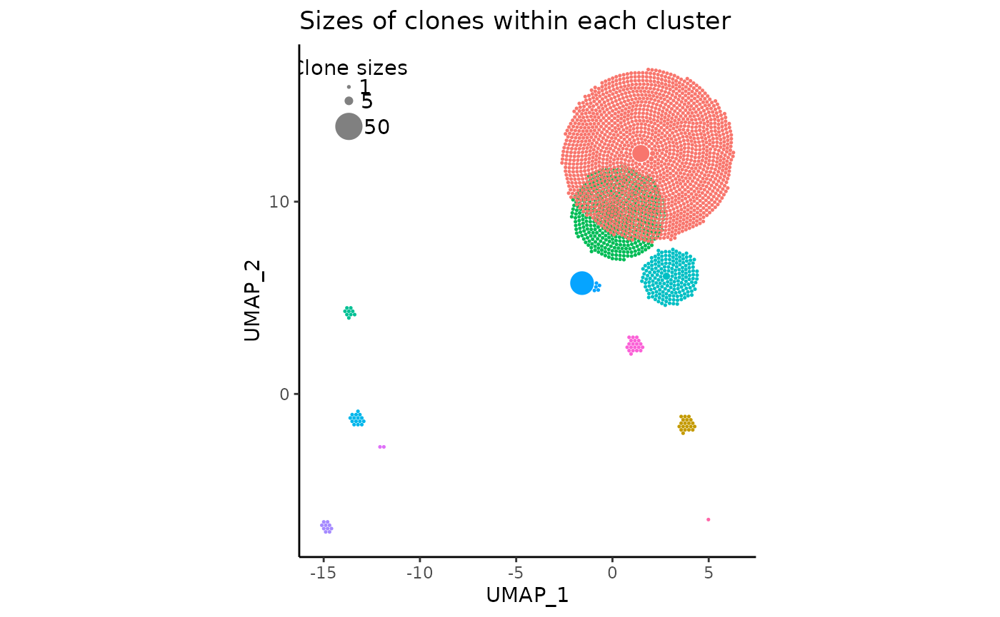
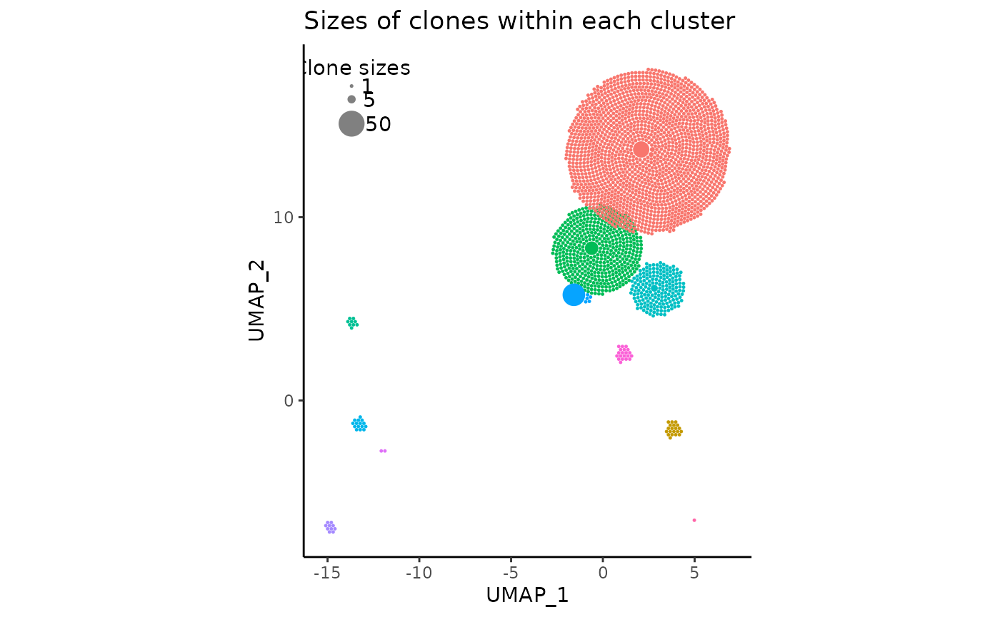
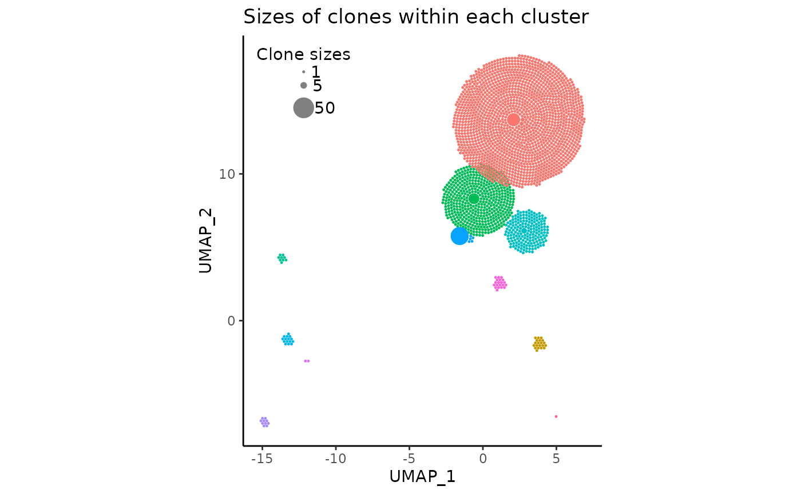
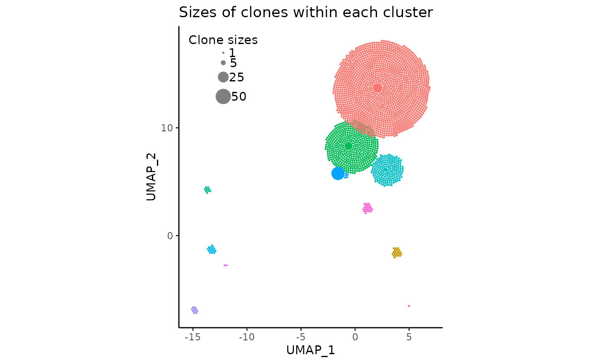
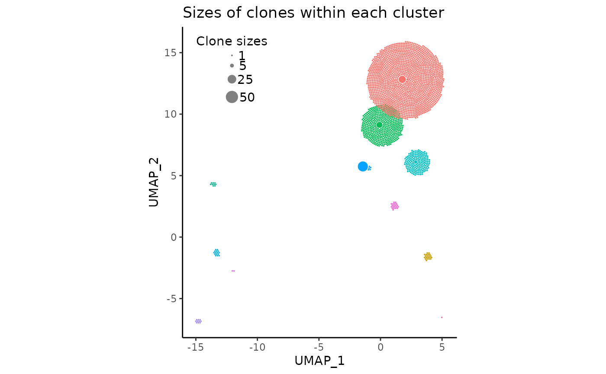
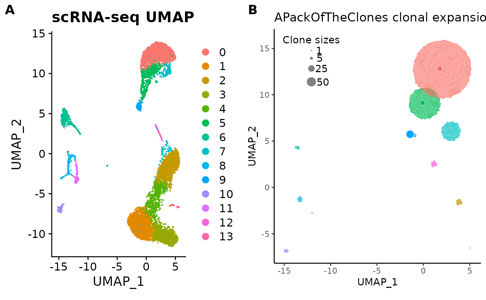

ARCHIVED: A walkthrough of APackOfTheClones v0.1.x
Source:vignettes/archive/v0-main.Rmd
v0-main.RmdIntroduction
Single-cell RNA sequencing (scRNA-seq) and T cell receptor (TCR)
sequencing are popular techniques for studying immune cell function and
disease. The combined use of such data can provide insights into clonal
expansion. APackOfTheClones provides a simple,
publication-ready method to intuitively visualize clonal expansion
between different cell clusters with ggplot2, and can be
easily slotted into any analysis pipeline.
In this user vignette, we will assume basic familiarity with
Seurat and R, and a Seurat object
has already been processed through the basic pipeline until at least the
UMAP reduction has been obtained. Most importantly, clonal expansion can
only be analyzed if the biosample has been run through the 10X genomics
Chromium
Single Cell Immune Profiling service, and the resulting data
processed by Cell
Ranger.
We will be showing basic usage of the main function of the package,
Namely, in the integration of the 10X genomics T-cell receptor library
generated by Cell Ranger into a Seurat object, followed by
the usage of a fully customizable clonal expansion plotting method.
Setup the Seurat object and T cell receptor library
Before anything else can be done, we need a Seurat
object of the single cell experiment with a dimensional reduction. The
most modern and common reduction used in publications is UMAP (Uniform
Manifold Approximation and Projection) which is what this package
defaults to, and what this vignette will use. There is also a way to
base it off of the t-SNE (t-distributed stochastic neighbor embedding)
or PCA (Principle Component Analysis) reduction though choosing the
latter is probably not the best idea.
library(Seurat)
suppressPackageStartupMessages(library(APackOfTheClones))
# Here, a Seurat object has already been loaded named `pbmc`
print(pbmc)#> An object of class Seurat
#> 31053 features across 8000 samples within 1 assay
#> Active assay: RNA (31053 features, 2000 variable features)
#> 3 layers present: counts, data, scale.data
#> 2 dimensional reductions calculated: pca, umapHere, we can also see its UMAP reduction plot. It is very important that it is present within the Seurat object so that the later clonal expansion visualization can be based on the coordinates for intuitiveness.
umap_plot <- UMAPPlot(pbmc)
umap_plot
To analyze clonal expansion, the T-cell library (in the form of the
all_contig_annotations.csv file) generated by Cell Ranger
has to be “integrated” into the seurat object. This simply means that
the cell-level receptor information is incorporated into the
@meta.data attribute. However, before doing so, let’s
quickly view the file structure. An r dataframe of the read-in file has
been loaded named tcr_dataframe:
head(tcr_dataframe)| barcode | is_cell | contig_id | high_confidence | length | chain | v_gene | d_gene | j_gene | c_gene | full_length | productive | cdr3 | cdr3_nt | reads | umis | raw_clonotype_id | raw_consensus_id |
|---|---|---|---|---|---|---|---|---|---|---|---|---|---|---|---|---|---|
| AAACCTGAGTTAACGA-1 | True | AAACCTGAGTTAACGA-1_contig_1 | True | 362 | TRB | None | None | TRBJ2-5 | TRBC1 | False | None | None | None | 23679 | 4 | clonotype4 | None |
| AAACCTGAGTTAACGA-1 | True | AAACCTGAGTTAACGA-1_contig_2 | True | 872 | TRB | TRBV19 | TRBD1 | TRBJ1-1 | TRBC1 | True | True | CASSIRVNTEVFF | TGTGCCAGCAGTATCAGGGTAAACACAGAAGTCTTCTTT | 3993 | 3 | clonotype4 | clonotype4_consensus_2 |
| AAACCTGAGTTAACGA-1 | True | AAACCTGAGTTAACGA-1_contig_3 | True | 324 | Multi | None | None | TRAJ50 | TRBC1 | False | None | None | None | 4870 | 2 | clonotype4 | None |
| AAACCTGAGTTAACGA-1 | True | AAACCTGAGTTAACGA-1_contig_6 | True | 749 | TRA | TRAV10D | None | TRAJ49 | TRAC | True | True | CAARDTGYQNFYF | TGTGCAGCAAGGGACACGGGTTACCAGAACTTCTATTTT | 14844 | 5 | clonotype4 | clonotype4_consensus_1 |
| AAACCTGCATCCGGGT-1 | True | AAACCTGCATCCGGGT-1_contig_1 | True | 557 | TRA | TRAV19 | None | TRAJ56 | TRAC | True | True | CAAGGGNNKLTF | TGCGCAGCAGGAGGAGGCAATAATAAGCTGACTTTT | 14438 | 4 | clonotype5 | clonotype5_consensus_2 |
| AAACCTGCATCCGGGT-1 | True | AAACCTGCATCCGGGT-1_contig_2 | True | 619 | TRB | TRBV5 | TRBD1 | TRBJ1-4 | TRBC1 | True | True | CASSLTGISNERLFF | TGTGCCAGCAGCCTCACAGGGATTTCCAACGAAAGATTATTTTTC | 3721 | 2 | clonotype5 | clonotype5_consensus_1 |
This is the first 5 rows of what the file should look like directly
from cell ranger. If you for some reason have some custom version of
this dataframe that is different, it is highly important that there AT
LEAST exists the column with the column name barcode
(column 1) and raw_clonotype_id (column 17), otherwise
everything else will not work as intended.
Integration of clonotype information
To finally incorporate the TCR(T-cell receptor library) data into the
seurat object, we’ll use the simple integrate_tcr
function.
pbmc <- integrate_tcr(pbmc, tcr_dataframe, verbose = FALSE)Note that the last argument verbose was intentionally
set to FALSE due to the presence of a progress bar which
corrupts the formatting of the vignette (it defaults to the recommended
TRUE). Otherwise, the output to the R Console would have
been the following:
#> integrating TCR library into seurat object
#> |====================================| 100%
#> Percent of unique barcodes: 31 %By calling integrate_tcr, one can now find all the
information from all_contig_annotations.csv within the
@meta.data attribute. Let’s take a quick look on what it
looks like:
head(pbmc@meta.data)| orig.ident | nCount_RNA | nFeature_RNA | RNA_snn_res.0.6 | seurat_clusters | barcode | is_cell | contig_id | high_confidence | length | chain | v_gene | d_gene | j_gene | c_gene | full_length | productive | cdr3 | cdr3_nt | reads | umis | raw_clonotype_id | raw_consensus_id | |
|---|---|---|---|---|---|---|---|---|---|---|---|---|---|---|---|---|---|---|---|---|---|---|---|
| AAACCTGAGCAACGGT-1 | SeuratProject | 3456 | 1203 | 1 | 1 | NA | NA | NA | NA | NA | NA | NA | NA | NA | NA | NA | NA | NA | NA | NA | NA | NA | NA |
| AAACCTGAGCAGCCTC-1 | SeuratProject | 7335 | 2334 | 8 | 8 | NA | NA | NA | NA | NA | NA | NA | NA | NA | NA | NA | NA | NA | NA | NA | NA | NA | NA |
| AAACCTGAGTTAACGA-1 | SeuratProject | 2949 | 1144 | 0 | 0 | AAACCTGAGTTAACGA-1 | True | AAACCTGAGTTAACGA-1_contig_1__AAACCTGAGTTAACGA-1_contig_2__AAACCTGAGTTAACGA-1_contig_3__AAACCTGAGTTAACGA-1_contig_6 | True | 324__362__749__872 | Multi__TRA__TRB | None__TRAV10D__TRBV19 | None__TRBD1 | TRAJ49__TRAJ50__TRBJ1-1__TRBJ2-5 | TRAC__TRBC1 | False__True | None__True | CAARDTGYQNFYF__CASSIRVNTEVFF__None | None__TGTGCAGCAAGGGACACGGGTTACCAGAACTTCTATTTT__TGTGCCAGCAGTATCAGGGTAAACACAGAAGTCTTCTTT | 3993__4870__14844__23679 | 2__3__4__5 | clonotype4 | clonotype4_consensus_1__clonotype4_consensus_2__None |
| AAACCTGCATCCGGGT-1 | SeuratProject | 3586 | 1017 | 0 | 0 | AAACCTGCATCCGGGT-1 | True | AAACCTGCATCCGGGT-1_contig_1__AAACCTGCATCCGGGT-1_contig_2 | True | 557__619 | TRA__TRB | TRAV19__TRBV5 | None__TRBD1 | TRAJ56__TRBJ1-4 | TRAC__TRBC1 | True | True | CAAGGGNNKLTF__CASSLTGISNERLFF | TGCGCAGCAGGAGGAGGCAATAATAAGCTGACTTTT__TGTGCCAGCAGCCTCACAGGGATTTCCAACGAAAGATTATTTTTC | 3721__14438 | 2__4 | clonotype5 | clonotype5_consensus_1__clonotype5_consensus_2 |
| AAACCTGCATCTACGA-1 | SeuratProject | 2659 | 1141 | 3 | 3 | NA | NA | NA | NA | NA | NA | NA | NA | NA | NA | NA | NA | NA | NA | NA | NA | NA | NA |
| AAACCTGGTCTAACGT-1 | SeuratProject | 5266 | 1189 | 0 | 0 | AAACCTGGTCTAACGT-1 | True | AAACCTGGTCTAACGT-1_contig_1__AAACCTGGTCTAACGT-1_contig_2 | True | 565__651 | TRA__TRB | TRAV13D-2__TRBV13-3 | None__TRBD1 | TRAJ38__TRBJ2-7 | TRAC__TRBC1 | True | True | CAIDPPNVGDNSKLIW__CASSDDRVGEQYF | TGTGCCAGCAGTGACGACAGGGTGGGGGAACAGTACTTC__TGTGCTATAGACCCCCCTAATGTTGGTGACAACAGTAAGCTGATTTGG | 7172__13349 | 2__8 | clonotype6 | clonotype6_consensus_1__clonotype6_consensus_2 |
From this snippet of the meta data, we can see that for this
particular seurat object, the first 5 columns
orig.ident, nCount_RNA, nFeature_RNA, RNA_snn_res.0.6, seurat_clusters
were originally present. What we care about is all the new columns after
them. A few key things to note: * There are a lot of NA
values, and that is due to 1) some cells aren’t T cells, 2) some T cell
receptors do not end up being sequenced for many possible reasons, 3) Of
the sequenced T cells in the TCR library, there are usually a lot of
duplicate barcodes (repeated TCR sequencing of the same cell) as each
individual cell may have several TCR types and/or need several contigs
to assemble the final sequence. * unique data about TCRs of the same
cell (same barcode) are collapsed together with __ in the
order of the contigs
Now, the seurat object can be analyzed downstream with the new integrated information however we wish. It also is now ready to have its clonotypes counted and the clonal expansion visualized.
do I HAVE to integrate the the TCR library into my seurat object?
well… no. But there is no reason not to do so and it is heavily recommended to do so. Otherwise, we are about to see in the upcoming clonal expansion plotting function how you can avoid the integration.How do I get the clonal expansion per cluster information myself?
There is thecount_clone_sizes(seurat_obj) function for
doing so. Check the documentation by running
?count_clone_sizes for more details.
Ball packing visualization
All one has to do to produce the visualization is by simply running the following code:
pbmc_expansion_plot <- clonal_expansion_plot(pbmc, verbose = FALSE)
# once again, `verbose` is set to false but it defaults to TRUE
pbmc_expansion_plot
How do I base the clonal expansion plot off of the t-SNE or PCA reduction?
clonal_expansion_plot has an optional argument
reduction which defaults to 'umap' that
handles which reduction the plot is based off of. The argument can be
set to 'tsne' or 'pca' like so:
# t-SNE based plot
pbmc_expansion_plot <- clonal_expansion_plot(pbmc, reduction = 'tsne')
# PCA based plot
pbmc_expansion_plot <- clonal_expansion_plot(pbmc, reduction = 'pca')A few things to note about the plot
- The clonotype counts for each seurat cluster corresponds to their position and color in the original UMAP centroids
- The most expanded clonotypes are in the center of each circle cluster with larger sizes, symbolizing increased expansion
- There are less circles than the scRNAseq cell count due to aforementioned reasons.
- On the top left, there is a somewhat covered visual legend of the relative clone sizes
- The red and green clusters have considerable visual overlap
- The returned plot is a fully customizable
ggplotobject
As APackOfTheClones is in a rapid-development phase, the
resulting clonal expansion plot will usually not be visually
satisfactory on the first run without customizations. However, there are
many optional arguments and ggplot tricks that we are about
to explore that will help us make it publication quality.
How do I create the plot without integrating the Seurat object and TCR library?
clonal_expansion_plot will also work if the user
provides the original seurat object and the raw TCR library
dataframe, like so:
# let pbmc be the raw seurat object before the integration
pbmc_expansion_plot <- clonal_expansion_plot(pbmc, tcr_dataframe, verbose = FALSE)Adjusting intra-cluster spacing
The considerable overlap between clusters (due to the algorithm’s attempt to fit clusters to the original UMAP coordinates) may sometimes obstruct eachother excessively.
To account for this, there are four optional arguments in
clonal_expansion plot:
For more details on them, read the “Arguments” section in the
function documentation (?clonal_expansion_plot). But to
summarize, first, to make the circle clusters move away from eachother,
repulse should be set to TRUE, and the
function should be ran AGAIN. (If you feel this excessive re-running
takes too long or is inefficient for your workflow in its current form,
please make an issue on the github page.)
Setting repulse to TRUE with those default parameters should probably yield something like the following:
pbmc_expansion_plot <- clonal_expansion_plot(pbmc, repulse = TRUE, verbose = FALSE)
pbmc_expansion_plot
As we can see, the red and green clusters have “moved away” from each other, and there is very little overlap remaining. All other clusters which were not touching remain in their original positions.
Do I HAVE to re-run clonal_expansion_plot each time
I want to modify a parameter?
Unfortunately, yes. With the current version (v1) of
APackOfTheClones, to change the appearance of the plot,
clonal_expansion_plot has to be re-ran with modified
parameters each time, which unfortunately may be slow/tedious if a lot
of modifications are required. Please create a github issue or contact
the author if a new version should be made to prevent this.
If you are still unhappy with the spacing of the plot, see the following ways to adjust the spacing:
-
repulsion_thresholdindicates the amount ofggplot2units of overlap between clusters that are acceptable. It defaults to1, meaning that two clusters that overlap by about 1 unit are considered by the repulsion algorithm to not be overlapping. Increasing this number will increase the amount of overlap between clusters, and decreasing this number will do the opposite, while decreasing it to negative values will incur additional spacing between clusters. However, using negative spacing may cause the plot to look very spaced out. Keep reading to see alternatives to doing so. -
repulsion_strengthrelates to how much the clusters should repel each other. The repulsion algorithm works in iterations, where for each iteration, each cluster “pushes” each other away from eachother by some amount. Increasing this value will cause extra “pushing” during each iteration. However, increasing this factor too much may result once again in a very visually unpleasant plot. Note that closer clusters will repell eachother more, and larger clusters will repel smaller clusters more. -
max_repulsion_iterindicates the number of iterations where clusters should repel eachother. Increasing this number would ensure that clusters will (almost always) for sure not be overlapping. A trick with this parameter to make more pleasant plots is to decreaserepulsion_strengthand increasemax_repulsion_iterto possibly make a more pleasant arrangement of clusters.
Adjusting and customizing size legend
The plot we’ve generated here has a size legend on the top left, but we see that it is partially outside of the plot. Unfortunately the algorithm for placing the legend is far from perfect in version 0 so the user will have to do a little extra work.
There are the following six parameters to adjust the legend:
add_size_legend = TRUE,
legend_sizes = c(1, 5, 50),
legend_position = "top_left",
legend_buffer = 1.5,
legend_color = "#808080",
legend_spacing = 0.4Here, we can adjust the argument legend_buffer, which
indicates the amount of ggplot2 units to move the legend
“inwards” by. We can also slightly increase legend_spacing,
an argument specifying the vertical distance between circles in the
legend.
# the previous arguments have to be maintained!
pbmc_expansion_plot <- clonal_expansion_plot(
pbmc,
legend_buffer = 3,
legend_spacing = 0.6,
repulse = TRUE,
verbose = FALSE
)
pbmc_expansion_plot
We can even change the circle (clone) sizes displayed in the legend
by changing the vector legend_sizes:
pbmc_expansion_plot <- clonal_expansion_plot(
pbmc,
legend_sizes = c(1, 5, 25, 50),
legend_buffer = 3,
legend_spacing = 0.6,
repulse = TRUE,
verbose = FALSE
)
pbmc_expansion_plot
More details about these arguments can be read in the function documentation.
Adjusting and customizing circle size and scaling
So far, the sizes of the individual circles (clones) have seemed to look quite pleasant, fitting roughly into their UMAP cluster centroids snugly. However, this may not always be the case. A likely very common issue upon the initialization of the plot with default arguments is that the circles may be too small or too large.
In these cases, the argument clone_scale_factor should
be changed. The argument defaults to 0.1, which is the multiplicative
scale factor for the square root radius of a clone. So if a clone size
is four, and the factor is 0.1, then the actual radius of the circle on
the plot would be sqrt(4) * 0.1 which equates to 0.2.
Additionally, rad_scale_factor can optionally be changed
to adjust the intra-circular spacing. The factor defaults to 0.95 and
indicates the multiplicative amount to adjust the radius of the circles
after they have been placed. decreasing this value (slightly) will
basically make each circle smaller in place, increasing the spacing
between then,
For demonstration sake, we’ll change the
clone_scale_factor to 0.07 and
rad_scale_factor to 0.9:
pbmc_expansion_plot <- clonal_expansion_plot(
pbmc,
clone_scale_factor = 0.07,
rad_scale_factor = 0.9,
legend_sizes = c(1, 5, 25, 50),
legend_buffer = 3,
legend_spacing = 0.6,
repulse = TRUE,
verbose = FALSE
)
pbmc_expansion_plot
Other possible modifications
There are a few other arguments this vignette did not cover which can
be read in the function documentation. However, to end off, one more
important argument to consider is use_default_theme = TRUE.
It makes the plot have the same axis labels and general theme as the
original UMAP plot. If this isn’t to your liking or you want to
customize the plot your own way (since
clonal_expansion_plot generates a ggplot
object!), simply set it to FALSE and you’ll have a very
minimally themed plot:
clonal_expansion_plot(
pbmc,
use_default_theme = FALSE,
clone_scale_factor = 0.07,
rad_scale_factor = 0.9,
legend_sizes = c(1, 5, 25, 50),
legend_buffer = 3,
legend_spacing = 0.6,
repulse = TRUE,
verbose = FALSE
)Additionally, if you really want the plot to reflect the original
UMAP plot, you could try using ggplot2’s xlim
and ylim functions.
Final product
That’s about it for the most basic functionalities of the clonal
expansion visualization function. Remember to save the plot first as an
.svg file for maximal resolution, and it should be
publication ready.
For fun, here’s a side-by-side comparison of the UMAP plot and the clonal expansion plot:
library(ggplot2)
library(cowplot)
cowplot::plot_grid(
umap_plot + ggtitle("scRNA-seq UMAP"),
pbmc_expansion_plot + ggtitle("APackOfTheClones clonal expansion plot"),
labels = "AUTO"
)
How do I reproduce the plots in this vignette?
If you really want to reproduce the plots and code in this vignette,
you will need to install the data used in this vignette which has been
compiled in an R package SCIPData (Single Cell Immune
Profiling Data). You can do so with the following code
# install the data package
library(devtools)
devtools::install_github("Qile0317/SCIPData")
# load the package data directly into R objects in memory
data("pbmc", "tcr_dataframe")And the rest of the code can be copied and used accordingly.
Alternatively, there are two smaller, minimal, artificial versions of the seurat object and clonotype data that can be loaded inAPackOfTheClones, run ?mini_seurat_obj and
?mini_clonotype_data for more details.